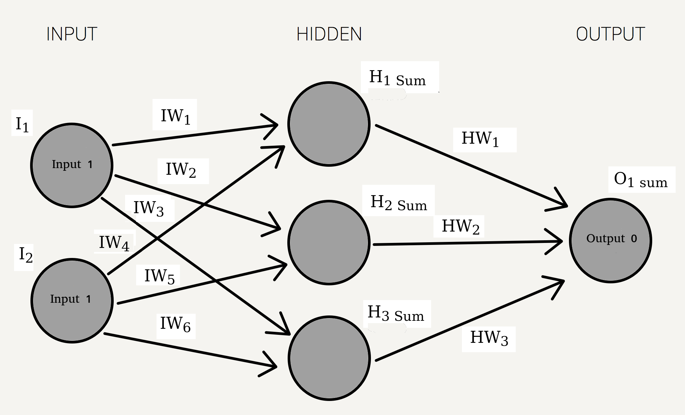
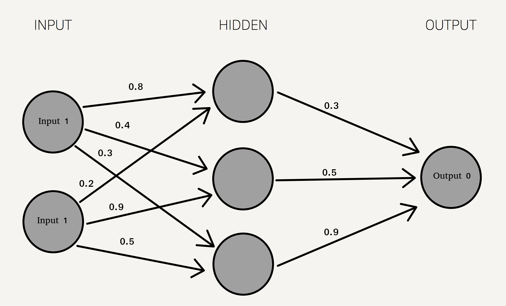
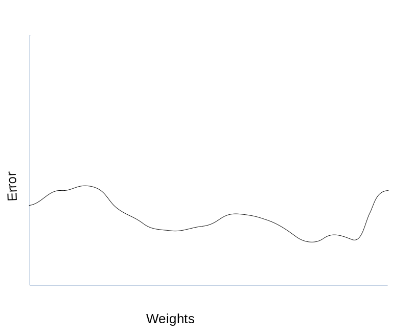
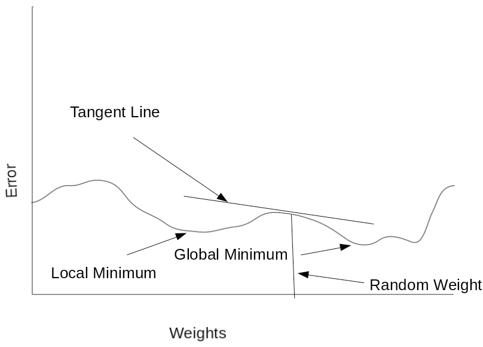

| Last Minute | This Minute |
|---|---|
| 2.1 | 3.6 |
| 2.4 | 3.2 |
| 2.3 | 1.7 |
| 2.1 | 2.7 |
The meaning (in C) of xor (exclusive OR) means either or, not both, and not neither. It uses the following truth table
| Inputs | Outputs | |||
|---|---|---|---|---|
| 0 | Not neither | ||
| 1 | Either one | ||
| 1 | Or the other | ||
| 0 | Not both |
To represent XOR in a neural network, there would be 2 inputs, 1 output and 1 hidden layer
| Per the truth table, an input of 1 and 1 should output 0 |  |
Lets clarify variable names
| Output Value | Calculated Output Value |
| Target Value | Expected Output Value |
| O1 sum | Output by output Neuron |
| f'(O1) | Derivative of Output Neuron output |
| H1 Sum | Hidden layer upper neuron output |
| f'(H1 Out) | Derivative of hidden layer upper neuron output |
| HW1 | Hidden layer weight |
| H2 Sum | Hidden layer middle neuron output |
| f'(H2 Out) | Derivative of hidden layer middle neuron output |
| HW2 | Hidden layer middle neuron weight |
| H3 Sum | Hidden layer lower neuron |
| f'(H3 Out) | Derivative of hidden layer lower neuron output |
| HW3 | Hidden layer lower neuron weight |
| IW1 | Input neuron 1 weight |
| IW2 | Input neuron 2 weight |
| IW3 | Input neuron 3 weight |
| IW4 | Input neuron 4 weight |
| IW5 | Input neuron 5 weight |
| IW6 | Input neuron 6 weight |
| I1 | Input 1 |
| I2 | Input 2 |
Since I'm a programmer more than a mathmatician, I'll explain more in code than math
I saved the following code in the file sig1.c
And compiled it with gcc -o sig1.exe sig1.c -lm
#include <stdio.h>
#include <math.h>
int main(void)
{
double in = -4.01 ;
double out = 0 ;
double sigderivative = 0 ;
out = 1.0/(1.0 + exp(-in)); /* Out = Sigmoid(in) */
printf("in = %lf Out = %lf\n", in, out) ;
sigderivative = out * (1.0 - out) ;
printf("Sigmoid Derivative = %lf\n", sigderivative) ;
return 0 ;
}
Quick and simple, the code takes the sigmoid of the in variable, and stores it in variable out[localhost neural]$ ./sig1.exe in = -4.010000 Out = 0.017810 Sigmoid Derivative = 0.017493
Forward Propagation
| Starting the network with random weights between 0 and 1 |  |
For each layer in the hidden layer, add the inputs * weight
(1 * 0.8) + (1 * 0.2) = 1 (1 * 0.4) + (1 * 0.9) = 1.3 (1 * 0.3) + (1 * 0.5) = 0.8Taking the sigmoid(S) for each of these gives the values of the hidden layer (rounded)
|
Again, multiply the values of the hidden layer by the second set of weights, and take the Sigmoid
https://stevenmiller888.github.io/mind-how-to-build-a-neural-network/
(0.731059*0.3)+(0.785835*0.5)+(0.689974*0.9) = 1.233212 S(1.233212) = 0.774380On the first pass, the network predicted the answer 0.77
Gradient Descent
To get the correct answer, one would need to adjust the weights, but the question is adjust which weights? How much? And in what direction? One solution could be brute force, just guess at weight values until the correct (or more correct) answer comes out. The problem with brute force is the curse of dimensionality. Because there are an infinite number of weight values for each synapse, one idea might be to limit the number of weights, say guess 1000 weights, then pick the one that came closest to the target. But because we need a total of 6 weights to get to the hidden layer, now we need to guess 10001000 (1,000,000) weights to test all of them. What if there were 10 inputs, with 20 hidden layers? The problem grows exponentially with more layers, inputs, and outputs.
The solution is gradient descent, borrowing from the linear regression camp how to calculate errors. This provides a mathmatical means of calculating the error, and adjusting the weights accordingly.
If you were to guess at an untold number of weights, and graphed the error for each weight (on a single neuron) it would look something like this. But there are some problems with this.
1. You have eyes and can easily see the lowest point on the graph
2. A computer doesn't have eyes

Assume you didn't randomly pick the lowest point, and odds are you never will. You would pick a random point, like the image below. You would want to find the gradient, or slope (AKA derivative), of the tangent line. (A tangent line is a straight line that touches a function at only one point. The tangent line represents the instantaneous rate of change of the function at that one point.)
|  | Note, Sometimes the network will work toward a local minimum instead of the global minimum |
Back Propagation
Back propagation is very similar to forward, only backwards
Output Value = 0.774380
Target Value = 0
O1 sum = 1.233212
f'(O1) = 0.774380
H1 Sum = 1
f'(H1 Out) = 0.731059
HW1 = 0.3
H2 Sum = 1.3
f'(H2 Out) = 0.785835
HW2 = 0.5
H3 Sum = 0.8
f'(H3 Out) = 0.689974
HW3 = 0.9
IW1 = 0.8
IW2 = 0.4
IW3 = 0.3
IW4 = 0.2
IW5 = 0.9
IW6 = 0.5
I1 = 1
I2 = 1
In the code above, the variable sigderivative is also called the sigmoid prime(S')
Delta Output Sum = S'(Osum) * Output Sum Margin of Error
| Old | New | |
|---|---|---|
| IW1 | 0.8 | 0.756879 |
| IW2 | 0.4 | 0.338198 |
| IW3 | 0.3 | 0.259303 |
| IW4 | 0.2 | 0.171253 |
| IW5 | 0.9 | 0.344217 |
| IW6 | 0.5 | 0.432171 |
| HW1 | 0.3 | 0.105296 |
| HW2 | 0.5 | 0.122168 |
| HW3 | 0.9 | 0.106089 |
1 epoch = once through the training data
Two values that are decided at coding time are
ε (epsilon) = Learning Rate = 0.7
α (alpha) = Momentum = 0.3
These numbers are not concrete, but more trial and error to find the correct numbers.
If the network isn't converging (learning) then try lowering the learning rate (epsilon)
If the network stops at a local minimum too often, try raising the alpha (momentum). Alpha is a way (hopefully) to escape local minimumns.
Suppose the network has been decreasing gradients in an epoch, if it hit a sign that indicates the need to increase the gradient would indicate it has passed a
minimum, and needs to go back.
This would be true if it just passed the global minimum. If it just passed a local minimum, and continues decreasing the gradient for
(alpha or momentium) distance, hopefully it will be enough to escape the local minimum and continue to search for the global minimum.
If the global minimum has just been passed, the network will back track after going (alpha or momentium) distance and assume it has passed the global minimum.
This approach is known as Online training, adjusting the weights for each training set of data.
If doing batch training, calculate the gradients for each weight and each input set. Rather than changing the weights after each input set, keep a record of each training set error, average them, and make a weight change after each epoch. XOR has 4 distinct train sets (00, 10, 01,11). A training set might contain 100 input pairs (in random order) and should have 25 of each type. Keep a running count of all the 0,0 pair errors, average them, and make a weight change at the end of each epoch.